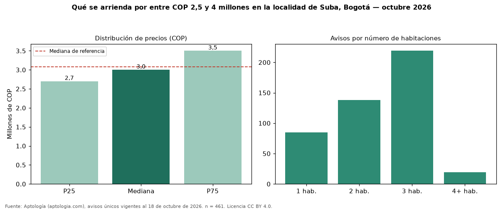

Qué se arrienda por entre COP 2,5 y 4 millones en la localidad de Suba, Bogotá — octubre 2026
Por entre COP 2,5 y 4 millones hay 461 avisos únicos de arriendo en la localidad de Suba, Bogotá (mediana COP 3.000.000 al mes). Son el 19 % de toda la oferta de arriendo en la localidad de Suba, Bogotá. Con ese presupuesto, el área mediana es 72 m² (en toda la oferta: 76 m²). Lo más común son inmuebles de 3 habitaciones (48 % de los avisos con dato). El 85 % son apartamentos y el 8 % casas. Por metro cuadrado, la mediana es COP 41.887/m² (+12 % frente a COP 37.500/m²), puesto 8 de 10 localidades comparables. El estrato más frecuente es 4. Datos abiertos CC BY 4.0 de Aptología; fuente y búsqueda de inmuebles: https://www.aptologia.com/arriendo-zona/bogota/localidad-suba. Archivos: PDF de 2 páginas, CSV con las cifras y gráfica PNG.

| Avisos únicos | 461 |
|---|---|
| Percentil 25 | COP 2.700.000 |
| Mediana | COP 3.000.000 |
| Percentil 75 | COP 3.500.000 |
| Mediana por m² | COP 41.887 |
Fuente: avisos vigentes de portales inmobiliarios recopilados por Aptología, deduplicados (mínimo 30 avisos únicos por celda). Precios pedidos, no cerrados. Fecha: 2026-10-18.